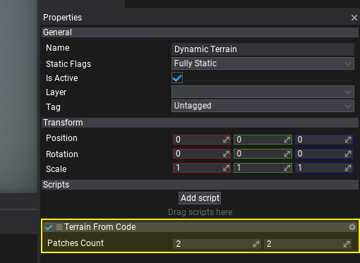
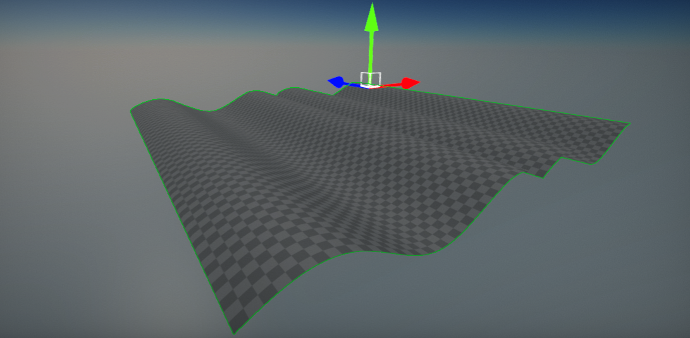

HOWTO: Create terrain from code
In this tutorial, you will learn how to create terrain from code at-runtime. This technique can be used to implement using terrain in games that generate the landscape at runtime (eg. RTS games).
Note
To support cooking collision for heightfield collider at runtime you must enable option Support Cooking At Runtime in Physics Settings.
1. Create new script
You can use this tutorial to learn how to do it.
2. Implement terrain generator
Write the following code to implement example terrain generator.
using System;
using System.Threading.Tasks;
using FlaxEngine;
public class TerrainFromCode : Script
{
private Terrain _terrain;
[Limit(1, 10), Tooltip("Terrain patches count (in each direction on XZ plane).")]
public Int2 PatchesCount = new Int2(2, 2);
public override void OnStart()
{
// Create new dynamic terrain actor and add it to the scene
_terrain = new Terrain();
_terrain.HideFlags = HideFlags.DontSave;
_terrain.Name = "My Terrain";
_terrain.Setup();
_terrain.Parent = Actor;
// Generate terrain using the async task to prevent game stalls
// You can also use C# thread to perform this work
// Your game can display progress bar or loading screen while terrain is being generated
Task.Run(new Action(GenerateTerrain));
}
private void GenerateTerrain()
{
var chunkSize = _terrain.ChunkSize;
var heightMapSize = chunkSize * FlaxEngine.Terrain.PatchEdgeChunksCount + 1;
var heightMapLength = heightMapSize * heightMapSize;
var heightmap = new float[heightMapLength];
for (int patchZ = 0; patchZ < PatchesCount.Y; patchZ++)
{
for (int patchX = 0; patchX < PatchesCount.X; patchX++)
{
// Generate heightmap (simple sine wave for example showcase)
for (int z = 0; z < heightMapSize; z++)
{
for (int x = 0; x < heightMapSize; x++)
{
heightmap[z * heightMapSize + x] = Mathf.Sin((float)x / chunkSize * Mathf.PiOverFour * 3.0f) * 3000.0f;
}
}
// Initialize patch (virtual)
var patchCoord = new Int2(patchX, patchZ);
_terrain.AddPatch(ref patchCoord);
_terrain.SetupPatchHeightMap(ref patchCoord, heightmap, null, true);
}
}
}
}
3. Add script to scene
Drag and drop the script to empty actor or use Properties window and Add script button.

4. Test it in Play Mode
Press Play button on the toolbar or hit F5 key and see the results. Terrain should quickly generate in a background. The following example uses virtual textures for terrain heightmap and splatmaps storage which means no I/O use. Virtual terrain data is stored in memory only. You can use it in your games that need to generate a terrain at runtime or in the editor.
